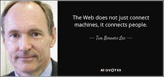

Tribute Page of Sir Tim Berners-Lee
Founder of the World Wide Web
"The Web is for everyone: regardless of disability, location or wealth."

"The Web as I envisaged it, we have not seen it yet. ..."
Overview
Sir Tim Berners-Lee, born in 1955, is a British computer scientist renowned for inventing the World Wide Web. His groundbreaking contributions revolutionized information sharing and communication. Working at CERN in the late 1980s, Berners-Lee conceptualized an interconnected system that led to the development of fundamental web technologies like HTML, URLs, and HTTP. He created the first web browser and server in 1990, laying the foundation for the modern web. Berners-Lee's invention democratized knowledge, enabling global collaboration and transforming industries. The World Wide Web facilitated e-commerce, social interaction, and online education. Beyond technology, his advocacy for net neutrality, privacy, and digital rights underscores his commitment to an open and accessible web. Recognized with prestigious awards, including the Turing Award, Berners-Lee's legacy endures through the ubiquitous impact of his creations. His visionary innovation continues to shape how we learn, work, and connect, highlighting the profound influence of his contributions on modern society..
Background and Education
Sir Tim Berners-Lee's background and education laid the foundation for his remarkable contributions to technology. Born in 1955 in London, England, he demonstrated an early interest in electronics and computers. His parents, both mathematicians, fostered his curiosity. He attended Sheen Mount Primary School and later Emanuel School. Berners-Lee pursued physics at The Queen's College, University of Oxford. There, his passion for computing flourished. He built his first computer with a soldering iron, an old television, and spare parts. After completing his degree, he worked on various computer-related projects, refining his programming skills. His pivotal move to CERN, the European research organization, marked a turning point. This environment of collaboration and innovation nurtured his concept of a global information-sharing network, culminating in his invention of the World Wide Web. Tim Berners-Lee's background in physics, combined with his insatiable curiosity and technical acumen, played a pivotal role in shaping his vision for the future of technology. His journey from a self-made computer builder to a world-changing inventor highlights the importance of a diverse and passionate education in shaping groundbreaking pioneers. .
Creation of the World Wide Web
Sir Tim Berners-Lee's creation of the World Wide Web was a result of his innovative vision, meticulous planning, and the development of foundational technologies. While working at CERN in the late 1980s, Berners-Lee was motivated by the challenge of sharing information among researchers on different computers. He proposed the concept of a "hypertext" system to connect documents through hyperlinks. In 1989, Berners-Lee wrote a proposal outlining the World Wide Web and the technologies needed to realize it, including HTML (Hypertext Markup Language) for structuring content, URLs (Uniform Resource Locators) for addressing resources, and HTTP (Hypertext Transfer Protocol) for communication. These components formed the basis for web development. Crucially, in 1990, Berners-Lee developed the first web browser (called "WorldWideWeb") and a web server, laying the groundwork for the modern web. The first webpage, which explained the project and how to use the browser, went live in 1991. Berners-Lee's design prioritized an open and decentralized approach, allowing anyone to create content and link it to other documents. This concept of a "web" of interconnected information led to the term "World Wide Web." As his creation gained traction, he actively sought feedback and contributions from the growing community of web enthusiasts. In summary, Tim Berners-Lee's creation of the World Wide Web stemmed from his innovative proposal, the development of essential technologies, and the creation of the first browser and server. His vision for an open, accessible, and interconnected platform laid the foundation for the expansive and transformative digital landscape we experience today. ..
Fundamental Technologies
1. HTML (Hypertext Markup Language): HTML is a markup language that structures and presents content on the web. It uses a system of "tags" to define the elements of a webpage, such as headings, paragraphs, images, and links. HTML allows developers to organize content hierarchically, enhancing accessibility and search engine optimization. It also enables the inclusion of multimedia elements like videos and audio. 2. URLs (Uniform Resource Locators): URLs are the web addresses that identify resources on the internet. They consist of several components, including the protocol (such as "http" or "https"), the domain name (like "example.com"), and the specific path to the resource on the server. URLs enable users to access webpages, files, images, and other resources by specifying their unique addresses. 3. HTTP (Hypertext Transfer Protocol): HTTP is a protocol that facilitates communication between web browsers and servers. It defines how data is requested and transmitted between the two. When you type a URL in your browser and hit "Enter," the browser sends an HTTP request to the server hosting the resource. The server then responds with the requested content, whether it's a webpage, image, or other data.
Web-related Initiatives
Sir Tim Berners-Lee's commitment to the advancement of the World Wide Web extended beyond its creation. He co-founded the World Wide Web Consortium (W3C) in 1994, a global community aimed at standardizing web technologies and ensuring its accessibility and interoperability. W3C's efforts resulted in the development of crucial web standards like HTML5 and CSS, ensuring consistent experiences across browsers. In 2009, Berners-Lee initiated the "Web Science" field, exploring the impact of the web on society and vice versa. He advocated for an open web platform, resisting proprietary technologies that could limit accessibility. Additionally, he launched the "Solid" project in 2016, aiming to give users control over their personal data and how it's shared online. Solid promotes data privacy and empowers individuals to choose how their data is used by apps and services. These initiatives highlight Berners-Lee's enduring commitment to an open, accessible, and user-centric web, emphasizing collaboration, innovation, and ethical considerations in the ever-evolving digital landscape..
How he inspire us to be software developer
Sir Tim Berners-Lee's role as the creator of the World Wide Web serves as a powerful inspiration for my journey in web development. His visionary thinking and transformative creation emphasize the potential of coding to shape the world. Witnessing how his innovative idea evolved into a global platform for information sharing and collaboration motivates me to contribute positively to the digital realm. His commitment to an open and accessible web underscores the importance of ethical development practices, reminding me to prioritize user experience, privacy, and inclusivity. Berners-Lee's journey from conceptualizing the web to advocating for its responsible use demonstrates the multifaceted impact developers can have. His recognition further emphasizes the respect and influence that can be earned within the tech community. As I work on a tribute page, I aim to reflect his principles by crafting an engaging, user-friendly, and meaningful digital experience, just as he transformed the online landscape through his innovation.